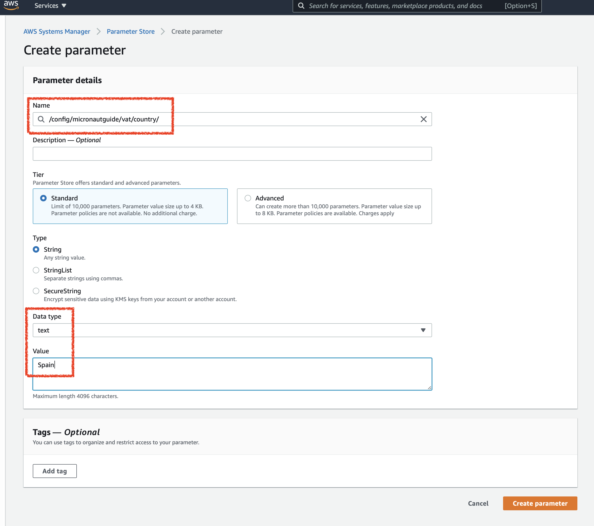
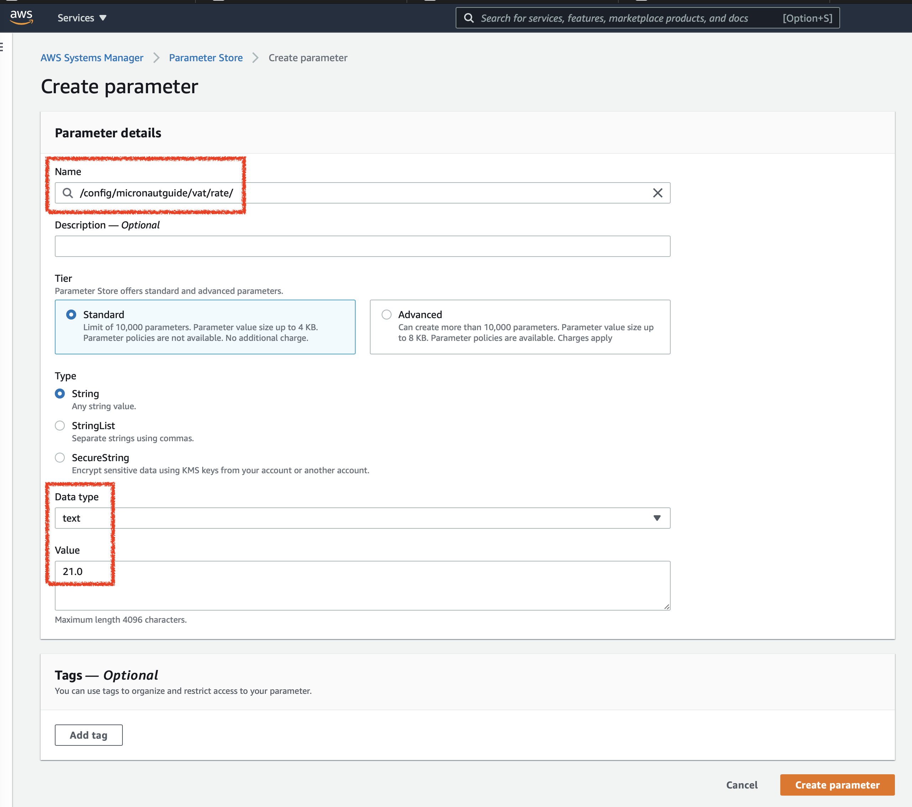

Micronaut AWS Parameter Store
Learn how to use AWS Parameter for Configuration Discovery in a Micronaut application.
On this guide
In this section
Getting Started
In this guide, you will use AWS Parameter Store in a Micronaut application to drive configuration.
What you will need
To complete this guide, you will need the following:
-
Some time on your hands
-
A decent text editor or IDE (e.g. IntelliJ IDEA)
-
JDK 21 or greater installed with
JAVA_HOMEconfigured appropriately
Solution
We recommend that you follow the instructions in the next sections and create the application step by step. However, you can go right to the completed example.
-
Download and unzip the source
Writing the Application
Create an application using the Micronaut Command Line Interface or with Micronaut Launch.
mn create-app example.micronaut.micronautguide --build=gradle --lang=java|
Note
|
If you don’t specify the --build argument, Gradle with the Kotlin DSL is used as the build tool. If you don’t specify the --lang argument, Java is used as the language.If you don’t specify the --test argument, JUnit is used for Java and Kotlin, and Spock is used for Groovy.
|
The previous command creates a Micronaut application with the default package example.micronaut in a directory named micronautguide.
Controller
First, create an interface to encapsulate the Value-added Tax rate of a country.
package example.micronaut;
import io.micronaut.core.annotation.NonNull;
import java.math.BigDecimal;
public interface Vat {
@NonNull
String getCountry();
@NonNull
BigDecimal getRate();
}Create a GET endpoint /vat. It returns the Value-added Tax rate configured in our application.
Configuration
Test
Write a test that verifies a GET /vat endpoint returns the value set via configuration.
Dependency
To use AWS Parameter Store to drive configuration, add the following dependency:
implementation("io.micronaut.aws:micronaut-aws-parameter-store")Enable Distributed Configuration
Create a bootstrap.properties file in the resources directory to enable distributed configuration.
Add the following:
properties
<2> Set micronaut.config-client.enabled=true which is used to read and resolve configuration from distributed sources.
Clean up Application Configuration
If application.properties sets micronaut.application.name, remove it. You moved it to bootstrap.properties.
micronaut.application.name=micronautguideDisable Distributed Configuration for Test
You can disable distributed configuration in a test by annotating a test with:
@Property(name = "micronaut.config-client.enabled", value = StringUtils.FALSE)
@MicronautTestTune Distributed Configuration Startup
Add the following configuration to bootstrap.properties:
aws.distributed-configuration.search-active-environments=false
aws.distributed-configuration.search-common-application=falseIf your application has the active environments ec2, cloud, and lambda, the following configuration prefixes are searched:
-
/config/micronautguide_ec2/ -
/config/micronautguide_cloud/ -
/config/micronautguide_lambda/ -
/config/micronautguide/ -
/config/application_ec2/ -
/config/application_cloud/ -
/config/application_lambda/ -
/config/application/
If you set:
aws.distributed-configuration.search-active-environments=falseThe following prefixes are searched:
-
/config/micronautguide/ -
/config/application/
If you set:
aws.distributed-configuration.search-common-application=falseThe following prefixes are searched:
-
/config/micronautguide_ec2/ -
/config/micronautguide_cloud/ -
/config/micronautguide_lambda/ -
/config/micronautguide/
By setting both:
aws.distributed-configuration.search-active-environments=false
aws.distributed-configuration.search-common-application=falseOnly the following prefix is searched:
-
/config/micronautguide/
Reducing the number of prefixes reduces the application’s startup time.
Enable Distributed Configuration with AWS Parameter Store
Add the following configuration to enable distributed configuration with AWS Parameter Store:
|
Note
|
The micronaut.application.name value will be part of the parameter name in AWS Parameter Store.
|
Logging
Add loggers to get a more verbose output:
...
<logger name="io.micronaut.discovery" level="TRACE"/>
<logger name="io.micronaut.aws" level="TRACE"/>
</configuration>Populate Configuration at AWS Parameter Store
You can use the AWS CLI or the AWS Console to populate your configuration.
Set Parameters via AWS Console
Visit AWS Parameter Store service.
Create two parameters:


Set the environment to use ec2, the programmatic access and region:
export MICRONAUT_ENVIRONMENTS=ec2
export AWS_ACCESS_KEY_ID=xxx
export AWS_SECRET_ACCESS_KEY=xxx
export AWS_REGION=us-east-1To run the application, use the ./gradlew run command, which starts the application on port 8080.
You will get an output such as:
06:41:44.364 [main] INFO i.m.context.env.DefaultEnvironment - Established active environments: [ec2]
06:41:44.377 [main] INFO i.m.context.env.DefaultEnvironment - Established active environments: [ec2]
06:41:44.489 [main] INFO i.m.context.DefaultBeanContext - Reading Startup environment from bootstrap-test.properties
06:41:46.425 [main] DEBUG i.m.d.c.c.DistributedPropertySourceLocator - Resolving configuration sources from client: compositeConfigurationClient(AWS Parameter Store)
06:41:47.811 [main] TRACE i.m.d.a.p.AWSParameterStoreConfigClient - parameterBasePath=/config/application no parameters found
06:41:47.813 [main] TRACE i.m.d.a.p.AWSParameterStoreConfigClient - Retrieving parameters by path /config/application, pagination requested: false
06:41:47.961 [main] TRACE i.m.d.a.p.AWSParameterStoreConfigClient - parameterBasePath=/config/application no parameters found
06:41:47.961 [main] TRACE i.m.d.a.p.AWSParameterStoreConfigClient - parameterBasePath=/config/application no parameters found
06:41:48.084 [main] TRACE i.m.d.a.p.AWSParameterStoreConfigClient - parameterBasePath=/config/micronautguide no parameters found
06:41:48.085 [main] TRACE i.m.d.a.p.AWSParameterStoreConfigClient - Retrieving parameters by path /config/micronautguide, pagination requested: false
06:41:48.222 [main] TRACE i.m.d.a.p.AWSParameterStoreConfigClient - parameterBasePath=/config/micronautguide no parameters found
06:41:48.224 [main] TRACE i.m.d.a.p.AWSParameterStoreConfigClient - Converted {vat.rate=21, vat.country=Spain}
06:41:48.224 [main] TRACE i.m.d.a.p.AWSParameterStoreConfigClient - param found: parameterBasePath=/config/micronautguide parameter=vat.rate
06:41:48.224 [main] TRACE i.m.d.a.p.AWSParameterStoreConfigClient - param found: parameterBasePath=/config/micronautguide parameter=vat.country
06:41:48.359 [main] TRACE i.m.d.a.p.AWSParameterStoreConfigClient - parameterBasePath=/config/application_ec2 no parameters found
06:41:48.360 [main] TRACE i.m.d.a.p.AWSParameterStoreConfigClient - Retrieving parameters by path /config/application_ec2, pagination requested: false
06:41:48.485 [main] TRACE i.m.d.a.p.AWSParameterStoreConfigClient - parameterBasePath=/config/application_ec2 no parameters found
06:41:48.485 [main] TRACE i.m.d.a.p.AWSParameterStoreConfigClient - parameterBasePath=/config/application_ec2 no parameters found
06:41:48.607 [main] TRACE i.m.d.a.p.AWSParameterStoreConfigClient - parameterBasePath=/config/micronautguide_ec2 no parameters found
06:41:48.607 [main] TRACE i.m.d.a.p.AWSParameterStoreConfigClient - Retrieving parameters by path /config/micronautguide_ec2, pagination requested: false
06:41:48.732 [main] TRACE i.m.d.a.p.AWSParameterStoreConfigClient - parameterBasePath=/config/micronautguide_ec2 no parameters found
06:41:48.733 [main] TRACE i.m.d.a.p.AWSParameterStoreConfigClient - parameterBasePath=/config/micronautguide_ec2 no parameters found
06:41:48.733 [main] TRACE i.m.d.a.p.AWSParameterStoreConfigClient - source=micronautguide got priority=-98
06:41:48.734 [main] INFO i.m.d.c.c.DistributedPropertySourceLocator - Resolved 1 configuration sources from client: compositeConfigurationClient(AWS Parameter Store)
06:41:49.083 [main] INFO io.micronaut.runtime.Micronaut - Startup completed in 4874ms. Server Running: http://localhost:8080You should be able to execute this curl request and see 21 as the output:
curl -i localhost:8080/vatSet Parameters via AWS CLI
Install AWS CLI.
After you configure the CLI, the AWS region, access key ID, and secret access key are available to the application.
Run the following commands to create the parameters:
aws ssm put-parameter --name /config/micronautguide/vat/country --value=Spain --type String
aws ssm put-parameter --name /config/micronautguide/vat/rate --value=21.0 --type StringSet the environment to use ec2.
export MICRONAUT_ENVIRONMENTS=ec2The AWS region and programmatic access set via the CLI will be used.
To run the application, use the ./gradlew run command, which starts the application on port 8080.
You will get an output such as:
06:41:44.364 [main] INFO i.m.context.env.DefaultEnvironment - Established active environments: [ec2]
06:41:44.377 [main] INFO i.m.context.env.DefaultEnvironment - Established active environments: [ec2]
06:41:44.489 [main] INFO i.m.context.DefaultBeanContext - Reading Startup environment from bootstrap-test.properties
06:41:46.425 [main] DEBUG i.m.d.c.c.DistributedPropertySourceLocator - Resolving configuration sources from client: compositeConfigurationClient(AWS Parameter Store)
06:41:47.811 [main] TRACE i.m.d.a.p.AWSParameterStoreConfigClient - parameterBasePath=/config/application no parameters found
06:41:47.813 [main] TRACE i.m.d.a.p.AWSParameterStoreConfigClient - Retrieving parameters by path /config/application, pagination requested: false
06:41:47.961 [main] TRACE i.m.d.a.p.AWSParameterStoreConfigClient - parameterBasePath=/config/application no parameters found
06:41:47.961 [main] TRACE i.m.d.a.p.AWSParameterStoreConfigClient - parameterBasePath=/config/application no parameters found
06:41:48.084 [main] TRACE i.m.d.a.p.AWSParameterStoreConfigClient - parameterBasePath=/config/micronautguide no parameters found
06:41:48.085 [main] TRACE i.m.d.a.p.AWSParameterStoreConfigClient - Retrieving parameters by path /config/micronautguide, pagination requested: false
06:41:48.222 [main] TRACE i.m.d.a.p.AWSParameterStoreConfigClient - parameterBasePath=/config/micronautguide no parameters found
06:41:48.224 [main] TRACE i.m.d.a.p.AWSParameterStoreConfigClient - Converted {vat.rate=21, vat.country=Spain}
06:41:48.224 [main] TRACE i.m.d.a.p.AWSParameterStoreConfigClient - param found: parameterBasePath=/config/micronautguide parameter=vat.rate
06:41:48.224 [main] TRACE i.m.d.a.p.AWSParameterStoreConfigClient - param found: parameterBasePath=/config/micronautguide parameter=vat.country
06:41:48.359 [main] TRACE i.m.d.a.p.AWSParameterStoreConfigClient - parameterBasePath=/config/application_ec2 no parameters found
06:41:48.360 [main] TRACE i.m.d.a.p.AWSParameterStoreConfigClient - Retrieving parameters by path /config/application_ec2, pagination requested: false
06:41:48.485 [main] TRACE i.m.d.a.p.AWSParameterStoreConfigClient - parameterBasePath=/config/application_ec2 no parameters found
06:41:48.485 [main] TRACE i.m.d.a.p.AWSParameterStoreConfigClient - parameterBasePath=/config/application_ec2 no parameters found
06:41:48.607 [main] TRACE i.m.d.a.p.AWSParameterStoreConfigClient - parameterBasePath=/config/micronautguide_ec2 no parameters found
06:41:48.607 [main] TRACE i.m.d.a.p.AWSParameterStoreConfigClient - Retrieving parameters by path /config/micronautguide_ec2, pagination requested: false
06:41:48.732 [main] TRACE i.m.d.a.p.AWSParameterStoreConfigClient - parameterBasePath=/config/micronautguide_ec2 no parameters found
06:41:48.733 [main] TRACE i.m.d.a.p.AWSParameterStoreConfigClient - parameterBasePath=/config/micronautguide_ec2 no parameters found
06:41:48.733 [main] TRACE i.m.d.a.p.AWSParameterStoreConfigClient - source=micronautguide got priority=-98
06:41:48.734 [main] INFO i.m.d.c.c.DistributedPropertySourceLocator - Resolved 1 configuration sources from client: compositeConfigurationClient(AWS Parameter Store)
06:41:49.083 [main] INFO io.micronaut.runtime.Micronaut - Startup completed in 4874ms. Server Running: http://localhost:8080You should be able to execute this curl request and see 21 as the output:
curl -i localhost:8080/vatLeverage Environments
AWS Parameter Store is especially powerful in combination with Micronaut environments. Imagine you also deploy the application for Switzerland. You can have an environment named ch and load different configuration based on the environment. Create two parameters:
aws ssm put-parameter --name /config/micronautguide_ch/vat/country --value=Switzerland --type String
aws ssm put-parameter --name /config/micronautguide_ch/vat/rate --value=7.7 --type StringEnable search for active environments:
aws.distributed-configuration.search-active-environments=trueSet the environment to use ec2 and ch.
export MICRONAUT_ENVIRONMENTS=ec2,chRun the application, and you should be able to execute this curl request and see 7.7 as the output:
curl -i localhost:8080/vatNext Steps
Read about Micronaut AWS Parameter Store integration.
Read about AWS System Manager Parameter Store
Help with the Micronaut Framework
The Micronaut Foundation sponsored the creation of this Guide. A variety of consulting and support services are available.
License
|
Note
|
All guides are released with an Apache License 2.0 for the code and a Creative Commons Attribution 4.0 license for the writing and media (images). |